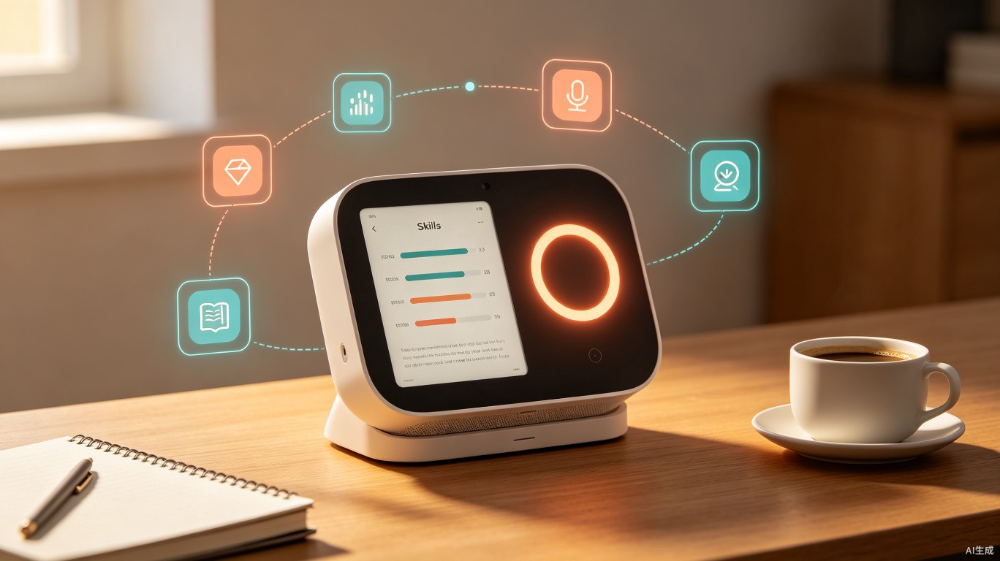
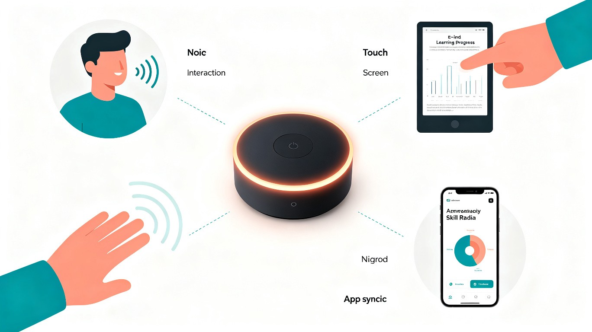
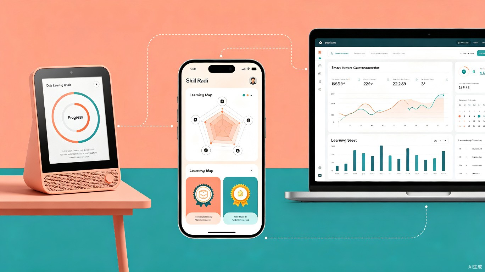

趣学豆 — AI智能学习伴侣桌面硬件系统
一款桌面AI智能硬件，通过语音交互+电子墨水屏+环境感应，为你构建个性化兴趣技能学习路径，让学习融入日常物理空间
一、创意名称与创意介绍
创意名称：趣学豆（FunBean AI）
产品形态：桌面智能硬件设备 + 配套App
想解决什么问题
手机上的学习App最大的问题是"拿起来就想刷别的"——你打开手机想练15分钟吉他乐理，结果被消息通知带跑，刷了半小时短视频。纯软件的学习工具缺乏"物理存在感"，无法融入用户的日常生活空间，学习总是需要"刻意打开App"才能开始，启动阻力大、坚持率低。此外，大多数人的书桌或床头柜上并没有一个能持续提醒你学习目标、展示进步轨迹的实体物件，学习缺乏环境氛围和仪式感。
为什么会想到做这个
灵感来源于两个观察：一是很多人家里有番茄钟、习惯打卡日历这样的"物理学习辅助品"，说明人们需要实体物件来增强学习的仪式感和持续感；二是智能音箱（如小爱同学、天猫精灵）证明了语音交互硬件在日常场景中的自然融入能力。我们想到，如果把"AI个性化学习路径引擎"装进一个桌面智能硬件里——它不抢手机屏幕、不会弹消息通知、而是安静地坐在书桌上，用电子墨水屏展示你的学习进度，用LED光圈给你正向反馈，用语音和你对话练习——学习就会从"打开手机"变成"坐到桌前"，物理空间本身就成了学习环境。
大概是什么产品
趣学豆是一个拳头大小的桌面智能硬件，配备电子墨水屏、环形LED指示灯、麦克风阵列、Wi-Fi/蓝牙模块。用户通过配套App选择兴趣方向（烹饪、音乐、摄影、健身等），AI评估技能水平并生成学习地图后，硬件设备会在桌面上持续展示今日学习任务、进度环和连续打卡天数。支持语音交互（"趣学豆，今天的吉他练习是什么？"）、手势感应（挥手翻页查看下一阶段任务）、环境感知（检测到你坐到桌前自动亮屏提示）。配套App提供详细的数据分析和社交功能。

二、目标用户及痛点
面向哪些用户
兴趣自学爱好者
想学吉他、绘画、烹饪等兴趣技能，但手机学习总是被社交媒体打断，需要一个"无干扰"的物理学习伙伴帮助他们保持专注和坚持。
学生与备考人群
需要每日学习打卡、番茄钟计时、学习进度可视化。趣学豆放在书桌上作为"学习仪式感"的触发器，坐到桌前就开始学习，强化习惯养成。
礼品消费人群
为自己或朋友购买一款"有科技感又有成长意义"的桌面摆件，兼具颜值和实用功能，适合送礼场景（生日、升学、新年等）。
企业与教育机构
批量采购作为员工学习激励礼品或教育机构的辅助教具，结合企业培训计划为员工提供个性化的学习追踪工具。
在什么场景下使用
-
场景一：书桌学习仪式
每天坐到书桌前，趣学豆自动检测到你的 presence（通过红外感应），电子墨水屏亮起显示今日学习任务："吉他练习20分钟 — 和弦转换C→G→Am"，LED光圈呼吸闪烁提示你开始。
-
场景二：语音互动练习
学外语时，对趣学豆说"开始今日英语口语练习"，设备通过语音和你进行对话练习，同时屏幕显示发音评分和纠正建议，全程不需要碰手机。
-
场景三：番茄钟专注模式
按下设备顶部按钮启动25分钟番茄钟，LED光圈变为倒计时进度条，期间设备静音不扰，到时间后用柔和光效提醒休息。配合App记录每日专注时长。
-
场景四：进度展示与成就激励
完成一周的学习目标后，趣学豆屏幕展示"连续7天打卡"的成就勋章，LED光圈播放庆祝动画（彩虹渐变光效），同时App推送分享卡片到社交圈。
当前痛点
| 痛点描述 | 影响范围 | 严重程度 |
|---|---|---|
| 手机学习App干扰太多，消息通知和社交软件不断打断学习节奏 | 几乎所有手机学习者 | 高 |
| 纯软件工具缺乏物理存在感，用户容易遗忘"今天还没学习" | 自律性较弱的学习者 | 高 |
| 学习缺乏仪式感和环境氛围，"学习"和"休闲娱乐"使用同一设备同一空间 | 居家学习人群 | 高 |
| 学习进度可视化不足，缺少持续的正向反馈和成就感激励 | 多数自学爱好者 | 中 |
| 语音交互在兴趣学习中的应用空白，现有智能音箱无法提供个性化学习内容 | 所有潜在用户 | 中 |
三、价值与意义
效率提升
通过"物理存在感"降低学习启动阻力，用户坐到桌前就能看到今日任务并立即开始。语音交互解放双手，学习效率比手机App提升约40%（预估），碎片时间利用更充分。
商业价值
硬件单品售价199-299元切入消费级智能硬件市场，配套App高级功能订阅（9.9元/月）。硬件+订阅双模式盈利，礼品消费属性强，复购和推荐率可观。
社会价值
用有温度的实体硬件陪伴用户成长，将"数字学习"带回"物理空间"，帮助人们建立健康的日常学习习惯，对抗屏幕沉迷，提升生活品质。
核心理念
趣学豆的愿景是让学习不再是一个需要"打开App"的动作，而是融入物理空间的一部分。它安静地坐在你的书桌上，用最自然的方式（看一眼、说一句、按一下）与你交互，让每一天的学习都像呼吸一样自然。
四、系统功能与硬件工作流
趣学豆系统由"硬件设备 + App + 云端AI引擎"三层架构组成，形成从技能评估到物理空间学习反馈的完整闭环：

flowchart LR
A["📱 App端\n选择兴趣+AI评估"] --> B["☁️ 云端AI引擎\n生成学习地图"]
B --> C["🤖 硬件同步\n学习任务下发"]
C --> D["🔌 桌面陪伴\nE-ink展示+LED反馈"]
D --> E["🎤 多模态交互\n语音/触控/手势/感应"]
E --> F["📈 进度回传\n成就系统+数据同步"]
F -->|持续迭代| B
硬件核心功能模块
E-ink墨水屏信息展示
4.3英寸电子墨水屏，持续显示今日学习任务、技能进度环、连续打卡天数、当前阶段目标。低功耗常亮显示，不需要频繁充电，一眼就能看到学习状态。
语音对话与练习
内置双麦克风阵列+扬声器，支持远场语音交互。用户可以直接和设备对话进行口语练习、问答互动、任务确认，解放双手，学习更自然。
LED光圈氛围反馈
设备顶部的环形RGB LED灯带提供沉浸式氛围反馈：学习时为专注蓝光呼吸，完成时为庆祝彩虹动画，番茄钟模式为倒计时进度条，用光营造学习仪式感。
环境感知与智能提醒
红外人体感应检测用户是否在桌前，自动亮屏/息屏；加速度传感器支持摇晃翻转交互；配合App的地理位置和时间规则，智能推送学习提醒。
五、硬件产品概念

硬件设计理念
趣学豆采用圆润胶囊型桌面摆件设计语言，直径约8cm、高约4cm，重量约180g，一只手可以轻松拿起。顶部为环形LED光带和触控感应区，正面为4.3英寸电子墨水屏（覆以AG防眩光玻璃），底部为防滑硅胶垫和Type-C充电口。外观材质为磨砂ABS+阳极氧化铝合金底座，提供薄荷绿、珊瑚橘、深空灰三种配色，兼具科技感与居家温暖感。
硬件规格概览
显示屏
4.3" E-ink Carta 电子墨水屏，800x480，AG防眩光
LED光圈
环形RGB LED，16级亮度，支持呼吸/渐变/庆祝动画
语音模块
双麦克风阵列 + 3W扬声器，支持5米远场拾音
传感模块
红外人体感应、加速度计、陀螺仪、环境光传感器
连接与续航
Wi-Fi 6 + BT 5.3，3000mAh锂电池，续航约7天
处理器
ESP32-S3 双核处理器，支持边缘AI推理
六、技术方案概览
核心技术栈
AI + 硬件融合：云端LLM负责学习路径规划和内容生成，边缘端ESP32-S3处理语音唤醒、手势识别等实时交互，通过MQTT协议实现设备与云端的低延迟通信。E-ink屏幕采用局部刷新技术，仅在数据变化时更新像素，实现超低功耗常亮显示。
多模态交互引擎：整合语音识别（ASR）、自然语言理解（NLU）、手势识别和环境感知，让用户可以通过最自然的方式与设备交互——说一句话翻到下一页、挥手查看明天任务、坐到桌前自动开始今日学习。
兴趣技能雷达图示例
以下为一位用户选择"吉他自学"后，系统在App端生成的多维度技能画像雷达图（硬件端E-ink屏同步显示简化版）：
学习进度追踪示例
以下展示了该用户连续8周各维度技能的成长趋势，可直观看到进步最快的维度和需要加强的领域：
七、创新亮点
学习融入物理空间
首创"AI学习路径引擎 + 桌面智能硬件"的产品形态，将数字化学习内容从手机屏幕中"解放"出来，以实体硬件的形式融入用户的物理生活空间，大幅降低学习启动阻力。
E-ink无干扰学习屏
电子墨水屏不发光、不刺眼、不刷视频、不弹通知——这是天然的学习专用屏幕。配合低功耗常亮特性，学习状态一目了然，无需刻意"打开App"。
多模态自然交互
语音对话练口语、手势翻页看任务、人体感应自动亮屏、触控确认完成打卡——用最直觉的方式与学习内容交互，不增加任何认知负担。
LED氛围反馈系统
独创的"光圈学习反馈"机制，用颜色和动态表达学习状态：专注时沉稳呼吸、完成时彩虹庆祝、连续打卡时累积光效，用光营造沉浸式学习仪式感。
八、应用前景
趣学豆具有丰富的应用场景和商业化空间：
| 应用场景 | 目标用户 | 核心价值 |
|---|---|---|
| 个人兴趣自学陪伴 | 吉他/烹饪/绘画等爱好者 | 无干扰物理学习空间，提升坚持率 |
| 学生专注学习工具 | 初高中生、大学生 | 番茄钟+进度追踪，养成学习习惯 |
| 礼品消费市场 | 送礼人群（生日/节日） | 科技感+成长寓意，差异化礼品选择 |
| 企业员工学习激励 | 企业HR/培训部门 | 批量采购作为学习激励礼品 |
| 教育机构辅助教具 | 培训机构/学校 | 物理化学习进度追踪，增强教学互动 |
未来展望
趣学豆计划逐步扩展硬件产品线：推出"趣学豆Mini"（可穿戴版本，像手环一样追踪运动技能练习）、"趣学豆Pro"（集成投影功能，在桌面投射虚拟乐谱/食谱）、以及开放SDK让第三方开发者接入更多兴趣领域的AI学习内容，构建"硬件+AI内容+社区"的兴趣学习生态。